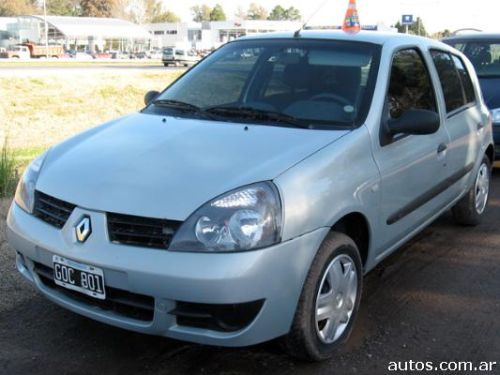

<ion-header>
  <ion-toolbar color="tertiary">
    <ion-buttons slot="start">
      <ion-menu-button></ion-menu-button>
    </ion-buttons>
    <ion-title class="ion-text-center">Veiculos</ion-title>
    <ion-buttons slot="end">
      <ion-button [routerLink]="['/detail-car']">
        <ion-icon name="add-outline"></ion-icon>
      </ion-button>
    </ion-buttons>
  </ion-toolbar>
</ion-header>

<ion-content>

  <ion-card *ngFor="let car of cars">
    <center>
      
    </center>
    <ion-card-header>
      <ion-card-subtitle>{{ car.anho_fabricacao }}</ion-card-subtitle>
      <ion-card-title>{{ car.nome }}</ion-card-title>
    </ion-card-header>
    <ion-grid>
      <ion-row class="ion-text-center car-subtitle">
        <ion-col size="4">
          <ion-icon name="construct-outline"></ion-icon>
          21/02/2021
        </ion-col>
        <ion-col size="4">
          <ion-icon name="speedometer-outline"></ion-icon>
          {{ car.motorizacao }}
        </ion-col>
        <ion-col size="4">
          <ion-icon name="water-outline"></ion-icon>
          {{ car.combustivel }}
        </ion-col>
      </ion-row>
    </ion-grid>
      <ion-item class="line-card">
        <ion-button mode="ios" [routerLink]="['/detail-car/', car.id]" fill="outline" color="success" size="small" slot="end"><ion-icon name="eye-outline"></ion-icon>Detalhes</ion-button>
        <ion-button mode="ios" [routerLink]="['/maintenances/']" class="btn-spa" fill="outline" color="warning" size="small" slot="end"><ion-icon name="menu-outline"></ion-icon>Manutenções</ion-button>
      </ion-item>
  </ion-card>
  
</ion-content>
